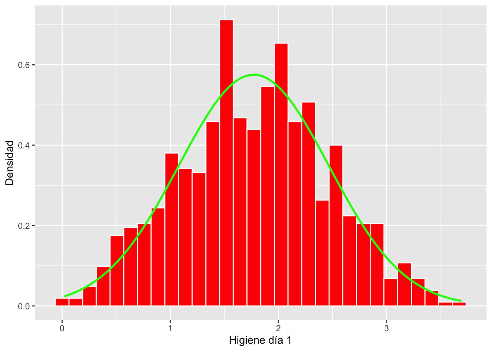

T8_Distribucion_Normal
Fecha de la ultima revisión
## [1] "2020-07-29"Instalar y activar los siguientes paquete
Para instalar el paquete modeest es necesario instalar foes otros paquetes antes, BiocManager y genefilter. Usando el siguiente script pora instalar los paquetes. Nota que en la consola tendrá que aceptar a instalar y seleccionar la “a” para “all”.
Chunk #1
if (!requireNamespace("BiocManager", quietly = TRUE))
install.packages("BiocManager")
BiocManager::install("genefilter")if (!require("pacman")) install.packages("pacman")
pacman::p_load( car, GGally, ggversa, pastecs, psych, pander, ggplot2, nortest, Hmisc, boot, knitr, modeest)
R.versionActivar los Paquetes
library(nortest) # paquete para probar la normalidad
library(car) # paquete para análisis de correlación
library(ggplot2) # paquete para visualizar los datos
library(ggversa) # paquete para diferentes conjuntos de datos
library(modeest) # paquete para calcular la moda
library(GGally) # Un paquete basado un ggplot2 para visualizar correlaciones
library(pastecs) # paquete para análisis tiempo-espacial usado en ecología
library(psych) # paquete para análisis psicométrica, psicológica y de personalidad
library(Hmisc) # Un grupo de función prácticos para gráficos y tablas
library(boot) # paquete para calcular los intervalos usando "bootstrap"
library(knitr) # un grupo de función para incluyendo tablas bonitas con kable.
library(tidyverse)
library(gt)
library(gridExtra)La distribución normal
Es modulo está enfocado en entender diferentes aspectos de la distribución normal. Muchas pruebas como la prueba de t, correlaciones, regresiones y ANOVA depende que algunos de los conjuntos de datos cumple con una distribución normal. Este tipo de pruebas se pueden referir a pruebas paramétricas.
La distribución normal tiene una ecuación que describe su distribución. Lo que que se observa es que la ecuación depende de solamente dos valores desconocidos, el promedio universal, µ y la desviación universal \(\sigma\). Nota que aquí estamos considerando todos los datos sobre un variable. Por ejemplo si esta hablando de del tamaño de un especie de pájaro ( El quetzal), es que tendríamos que tener TODOS los datos de cada uno de ellos. Primero vemos como se ve esta distribución y después explicamos porque aunque no tenemos todos los datos una aproximación es suficiente.
\[P(x)=\frac{1}{{\sigma\sqrt{ 2\pi}}}{e}^{-\frac{{(x-µ)}^{2}}{{2\sigma}^{2}}}\]
El promedio de la población \(\mu=\frac{\sum{{x}_{i}}}{{n}_{i}}\), se usa la letra “mu”, y se refiere al promedio universal. Esto quiere decir que no falta ningún dato. Nota que la distribución es en forma de campana, donde 50% de los datos están por encima del promedio y 50% están por debajo el promedio. Debido que la distribución tiene unos parámetros específico se puede predecir información cuando los datos cumple con tal distribución.
set.seed(12345)
dfnorm=rnorm(1000000, 0,1)
dfnorm=data.frame(dfnorm)
ggplot(dfnorm,(aes(x=dfnorm)))+
geom_density()+
geom_vline(xintercept = 0, colour="red")+
annotate("text", x=.8, y = .1, label="50% de los \n valores")+
annotate("text", x=-.8, y = .1, label="50% de los \n valores")+
xlab("algun valor")+
ylab("densidad")
Evaluando visualmente la distribución
El primer paso de cada investigación es evaluar si los supuestos se cumplen. Si las pruebas necesitan tener una distribución normal uno de los métodos más sencillo construir un histograma de los datos.
Usaremos datos que hemos visto en el modulo T5.
Se necesita el archivo DownloadFestival que se encuentra debajo la pestaña de Los Datos. El ejemplo proviene de Field et al. (2014).
Una bióloga estaba preocupado por los posibles efectos sobre la salud de los que particpan a un festivales de música. Entonces, un año fue al Download Festival en el Reino Unido (Download Festival UK). Ella midió la higiene del los que participaron al concierto n= 810 durante el festival de 3 días. Cada día intentaba encontrar a todas las personas que censó el primer día. Los valores asignado fueron de 0 a 4 sobre el nivel de limpieza por como olia los participantes
- 0 = hueles como un cadáver.
- 4 = hueles a rosas dulces en un fresco día de primavera
library(readr)
DownloadFestival_No_Outlier_ <- read_csv("Data_files_csv/DownloadFestival(No Outlier).csv")
dlf=DownloadFestival_No_Outlier_ #usamos un nombre más corta para facilitar
head(dlf) # ver las 3 primeras filas## # A tibble: 6 x 5
## ticknumb gender day1 day2 day3
## <dbl> <chr> <dbl> <dbl> <dbl>
## 1 2111 Male 2.64 1.35 1.61
## 2 2229 Female 0.97 1.41 0.290
## 3 2338 Male 0.84 NA NA
## 4 2384 Female 3.03 NA NA
## 5 2401 Female 0.88 0.08 NA
## 6 2405 Male 0.85 NA NASe nota en el histograma que la mayoría de los datos de la higiene de los participantes en el primer día se parece bastante a una distribución normal. Nota que los valores en el eje de y es la frecuencia de los valores en el conjunto de datos.
ggplot(dlf, aes(day1))+
geom_histogram(color="white", fill="red") ***
***
Añadiendo la distribución teórica al histograma
Ahora vamos a añadir la siguiente formula al gráfico \(P(x)=\frac{1}{{\sigma\sqrt{ 2\pi}}}{e}^{-\frac{{(x-µ)}^{2}}{{2\sigma}^{2}}}\). De esta forma podemos comparar los datos reales (las barras roja) con la distribución teorica si el promedio y la desviación estandar es igual a los datos.
Se añade el promedio y la desviación estándar con la siguientes funciones. La función *stat_function()** es para calcular parámetros.
stat_function(fun = dnorm, # dnorm = la densidad de la distribución normal
args = list(
mean = mean(dlf$day2, na.rm = TRUE), # mean = el promedio de los datos
sd = sd(dlf$day2, na.rm = TRUE))) # sd = la desviación estandar de los datosAhora nota que el eje de y no son frecuencias pero son densidades. La suma de todas las densidades es igual a 1.0. Vea que la linea teórica se acerca bastante a las barras del histograma. Este proceso NO es una prueba para determinar si los datos cumple con una distribución normal. Aunque con experiencia visualizando los datos uno puede tener un buen apreciación si los datos cumple suficientemente con la distribución normal para usar las pruebas paramétricas.
hist.dlfc1 <- ggplot(dlf, aes(day1)) +
geom_histogram(aes(y=..density..), colour="white", fill="red") +
labs(x="Higiene día 1", y = "Densidad")+
stat_function(fun = dnorm,
args = list(mean = mean(dlf$day1, na.rm = TRUE),
sd = sd(dlf$day1, na.rm = TRUE)),
colour = "green", size = 1)
hist.dlfc1
Evaluando datos no normal
Usamos los datos del segundo día y comparamos con el primer día. En este caso vemos que los datos no siguen una distribución normal están sesgados a la izquierda y vemos que “falta” valores pequeños, en otra palabra en este caso los valores negativos.
Evalúa y compara con el día tres
hist.dlfc2 <- ggplot(dlf, aes(day2)) +
geom_histogram(aes(y=..density..), colour="white", fill="blue") +
labs(x="Higiene día 2", y = "Densidad")+
stat_function(fun = dnorm,
args = list(mean = mean(dlf$day2, na.rm = TRUE),
sd = sd(dlf$day2, na.rm = TRUE)),
colour = "yellow", size = 2)
hist.dlfc2
Datos teóricos con histograma y la función de normalidad
Aquí creo una conjunto de datos al azar con la función rnorm y se presenta un histograma y se añade la linea teórica de la distribución normal.
La función rnorm creea una lista de datos una promedio y una dispersión específica.
rnorm(n, mean, sd)
rnorm = (la cantidad de datos generados, promedio, la desviación estandard)Es necesario convertir la lista en un data.frame en un tibble para usar los datos en ggplot2. Como los datos provienen de una distribución normal la linea teórica (casi) sigue perfectamente las barras de frecuencia. Más datos que uno tiene más similar las distribución observada (las barras) a la distribución teórica (la linea).
Haz unos ejercicio de reducir y aumentar el tamaño de muestra, n y compara las distribuciones. Evalúa cuando cuando son muy pequeño (n de 30 o menos).
#rnorm(10, 100, 10)
x=rnorm(10000, 10, 2)
dfx=as.tibble(x)
gt(head(dfx, n=3)) # Los primeros 3 datos del tibble | value |
|---|
| 8.776594 |
| 6.691068 |
| 9.287899 |
library(ggplot2)
hist.x <- ggplot(dfx, aes(value)) +
theme(legend.position = "none") +
geom_histogram(aes(y=..density..), bins=40,colour="black", fill="white") +
labs(x="Variable", y = "Densidad")+
stat_function(fun = dnorm, args = list(mean = mean(dfx$value,
na.rm = TRUE),
sd = sd(dfx$value, na.rm = TRUE)),
colour = "red", size = 1)
hist.x
qqplot
El gráfico Q-Q, o gráfico cuantil-cuantil, es una herramienta gráfica que nos ayuda a evaluar si un conjunto de datos proviene de alguna distribución teórica. Por ejemplo, si ejecutamos un análisis estadístico que asume que nuestra variable dependiente está normalmente distribuida, podemos usar un gráfico Q-Q normal para verificar esa suposición, se puede también evaluar otras distribuciones. Nota que es solo una verificación visual, no una prueba estadística. Esto nos permite visualizar si los datos cumple si o no con la distribución teórica.
Un diagrama Q-Q es un diagrama de dispersión y compara dos conjuntos de cuantiles uno observado y el otro teórico. Si ambos conjuntos de cuantiles provienen de una distribución normal, deberíamos ver los puntos formando una línea que es más o menos recta. Usamos los datos del primer y el segundo día de la higiene de los participantes al concierto de rock. Vean que los puntos están en el primer gráfico siguen una linea recta y la linea teórica (color azul) sigue estos puntos. Esto sugiere que los datos siguen una distribución normal. En el segundo gráfico vemos que los datos observados no siguen los datos teóricos (color rojo).
d=ggplot(dlf, aes(sample=day1))+
geom_qq()+
geom_qq_line(colour="blue")
e=ggplot(dlf, aes(sample=day2))+
geom_qq()+
geom_qq_line(colour="red")
grid.arrange(d,e, ncol=2)
Pruebas de normalidad.
Los ejemplos arriba no son pruebas, son visualización de los datos y con experiencia uno puede reconocer los con juntos de datos que cumple o no con una distribución normal. Al principio, cuando uno comienza a estudiar la estadística esto puede ser un poco confuso. Hay pruebas donde uno puede utiliza para evaluar y rechazar o aceptar si los datos cumple con distribución normal. Estos se introduce ahora por qué muchas de estas pruebas tienden a tener un tipo de error Tipo II alto. En otra palabra se rechaza la hipótesis nula (los datos provienen de una distribución normal) cuando son suficiente normal para las pruebas que se van a usar. Vamos a ver dos de estas pruebas aunque hay muchos en la literatura.
Por ejemplo Wikipedia menciona por lo menos 8 diferentes pruebas de normalidad https://en.wikipedia.org/wiki/Normality_test.
La prueba de Shapiro-Wilks
La prueba de Shapiro-Wilk es un prueba para determinar si un muestreo proviene de una distribución normal. Los datos se ponen en orden de los valores y se calcula el estadística de W. Aqui no vamos enseñar como hacer los cálculos los que le interesa pueden ir al a la siguiente pagina de https://en.wikipedia.org/wiki/Shapiro–Wilk_test. Lo imprtante es que
Ho: los datos no son diferentes de una distribución normal Ha: los datos no concuerda con una distribución normal.
Por consecuencia si se rechaza la hipótesis nula uno dice que los datos no cumplen con una distribución normal.
Problemas con la prueba. La prueba es sensitiva al tamaño de muestra. Esto quiere decir que cando el tamaño de muestra es demasiado pequeño o grande tiende a dar errores de Tipo II y Tipo I respectivamente.
Reglas básica.
1. no utilizar la prueba si el tamaño de muestra es menor de 50 2. no utilizar la prueba si el tamaño de muestra de muy grande (mayor de 200) a. Nota que algunos programa han podido hacer modificación a la formula y ahora se puede utilizar tamaño de muestra hasta 2000 (Stata, SPSS, SAS).
La función shapiro.test() es para evaluar una variable a la vez. Nota que aquí los datos de higiene del primer día sugiere que no cumple con una distribución normal. Cuando las dos alternativas anteriores los daots se ven bastante norma (histograma y qqplot)
shapiro.test(dlf$day1)##
## Shapiro-Wilk normality test
##
## data: dlf$day1
## W = 0.99592, p-value = 0.03198length(dlf$day1)## [1] 810La prueba de normalidad de Anderson-Darling
La prueba de Anderson-Darling es una prueba omnibus (una prueba general) EDF para la hipótesis que los datos provienen de una distribución normal. Las pruebas ómnibus son una especie de prueba estadística. Prueban si la varianza explicada en un conjunto de datos es significativamente mayor que la varianza inexplicada, en general. Para más detalle sobre esta prueba vea https://en.wikipedia.org/wiki/Anderson–Darling_test.
Se necesita la librería nortest y la función ad.test
Miran ahora que la distribución de los datos cumplen con normalidad cuando la de Shapiro-Wilk rechaza la hipótesis nula.
El mensaje es que es posible que diferentes pruebas le den información distinta y hay que estar claro sobre los supuestos y la sensitividad de estas pruebas.
La prueba de Anderson Darling es una de las más poderosas para evaluar si los datos provienen de una distribución normal. D’Agostino (1986) sugiere que la prueba puede ser utilizada con tamaño de muestra tan bajo como n=8.
*Ralph B. D'Agostino (1986). "Tests for the Normal Distribution". In D'Agostino, R.B.; Stephens, M.A. (eds.). Goodness-of-Fit Techniques. New York: Marcel Dekker. ISBN 0-8247-7487-6.* library(nortest)
ad.test(dlf$day1)##
## Anderson-Darling normality test
##
## data: dlf$day1
## A = 0.53944, p-value = 0.1661